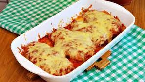

|
|
Sobremesas | Carnes | Massas | Bebidas |
LasanhaUma lasanha quentinha dá água na boca da família toda! Saiba como fazer lasanha de frango, carne, bolonhesa, berinjela e muitas outras receitas de lasanha com molhos variados. |
|
Ingredientes
Modo de Preparo
|
|
Confira outras receitas |
|

Brigadeiros Gourmet de Nozes |

Strogonoff de carne |

Filé de frango à parmegiana |

Caipirinha |

Bombom de travessa |

Massa de pizza italiana |
© 2023 Cozinha Criativa. Todos os direitos reservados.